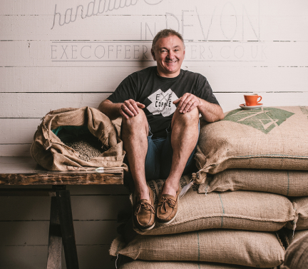
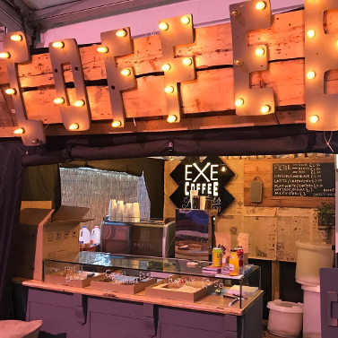
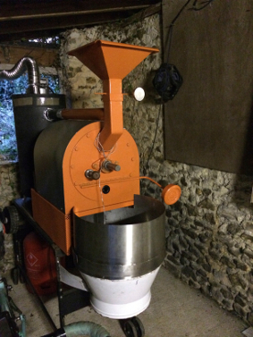
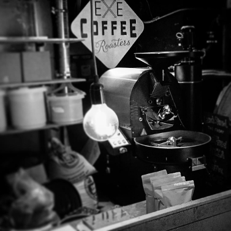

| About us | Shop & Roastery | Barista courses | Online shop |
| Steve heads up Exe Coffee Roasters and has been in the coffee industry since 2004 |


| We've brought great coffee to all sorts of events in Devon and around the country |
|
In 2012 with Steve handbuilt his very own coffee roaster This prototype used upcycled parts including a washing machine pulley, an electric motor from a deli meat slicer and the metal frame of a table tennis table |


| Nowadays we use a professional 12.5kg Probat roaster to get the best quality roast we can |